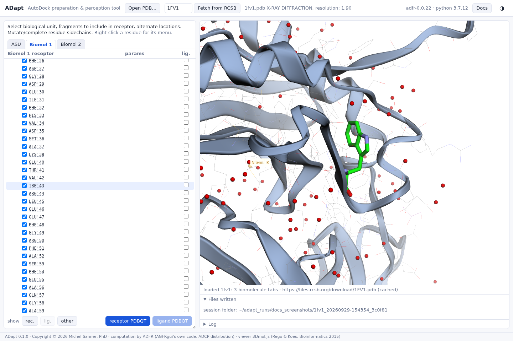
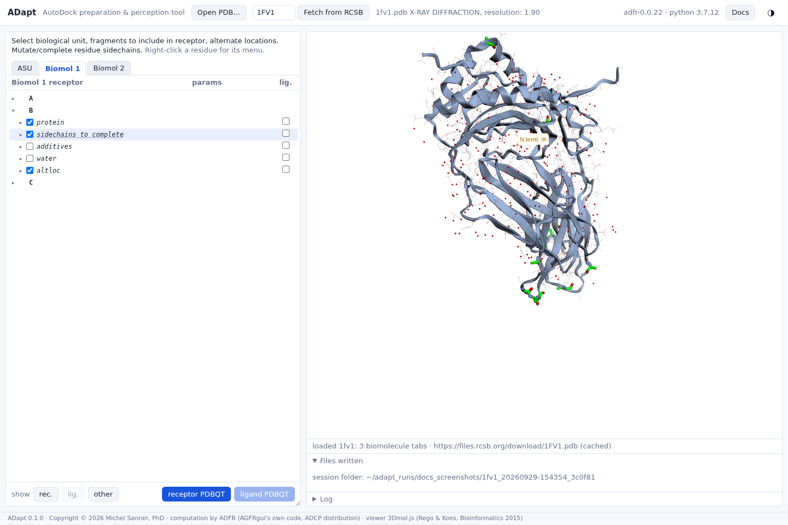
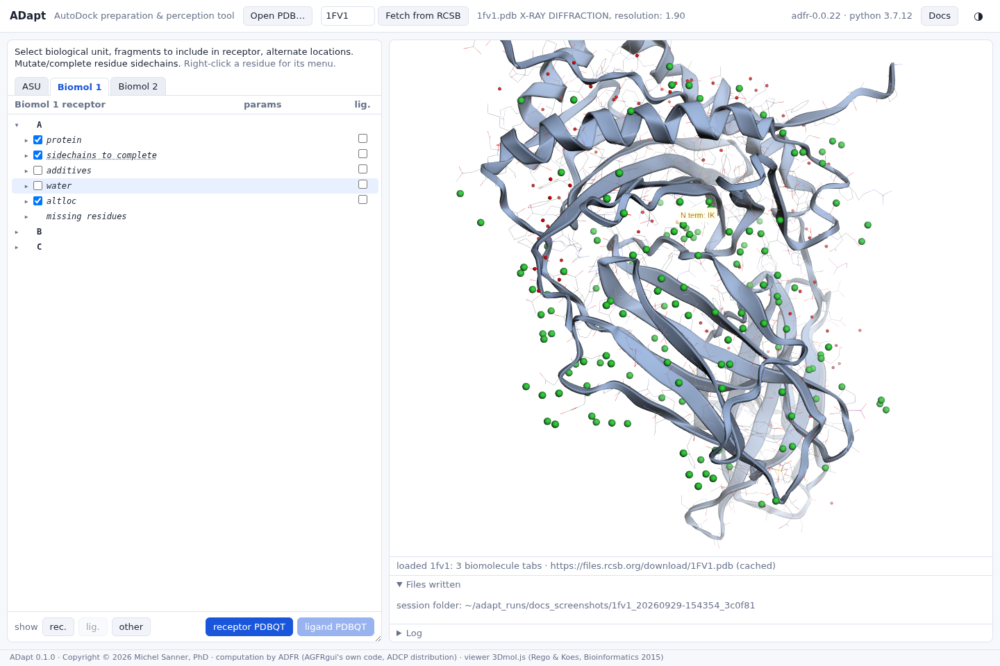

The tree and the 3D view
The tree is your way into the structure. Selecting anything in it shows it in 3D, and every choice you make in it is redrawn at once.
Selecting a fragment
Click a node's label (not its checkbox) to select it:
- its row is highlighted in the tree;
- its atoms are highlighted in green in the 3D view: as sticks, or as green spheres for atoms without bonds such as ions and waters;
- the view centres on the fragment. A single residue or ion is shown with its surroundings, so you can judge where it is relative to your pocket. A selection spread over the molecule, such as a whole category, is framed as a whole.
The triangle, or a double-click on the label, opens and closes a node.

What a node highlights
| Node | Highlighted in the 3D view |
|---|---|
| a residue | its atoms; for a residue with alternate locations, those of the location in use |
| a category (protein, sidechains to complete, water, …) | all of its residues at once |
| altloc | every residue of the chain that has alternate locations (see alternate locations) |
| a missing residues entry | the residues on either side of the gap, next to its orange marker (see missing residues) |
| an entry under unknown atom types | the unsupported atom |
| a chain | nothing: a chain node only opens and closes |


The highlight stays while you work
Checking or unchecking a box, choosing an alternate location, editing a charge or mutating a residue redraws the molecule's colours and keeps the selected fragment highlighted. You can decide on a residue while looking at it. The highlight is replaced by your next selection, and cleared when you change tab or load another file.
What the colours mean
| In the 3D view | Means |
|---|---|
| lines with grey carbons, light blue cartoon | in the receptor |
| sticks with orange carbons, orange cartoon | in the ligand |
| lines with purple carbons, grey cartoon | in neither |
| small spheres in element colours | atoms without bonds: waters, ions |
| the same, translucent | a symmetry copy (not in the tree; see biological assembly) |
| green | the selected fragment, or what show rec. / show lig. highlights |
| orange carbons | what show other highlights |
| sticks with cyan carbons | the rotamer preview of a side chain to be built |
| orange dotted lines, spheres and labels | missing residues |
A checkbox click recolours its atoms immediately, so you can see what you just added or removed.
Browsing rotamers
Selecting a residue under sidechains to complete also draws the side chain that would be built, with cyan carbons. The drop-down in its params column lists the library's rotamers. Pick one, or hover over the drop-down and turn the mouse wheel to step through them one at a time; the preview and its score in the status line follow. While the pointer is over the drop-down, the wheel browses rotamers and the tree does not scroll. See missing side chains.
The show buttons
show rec., show lig. and show other highlight everything currently in the receptor, in the ligand, or in neither, and frame it. Use them before writing a file, to check at a glance that the receptor is what you meant it to be.